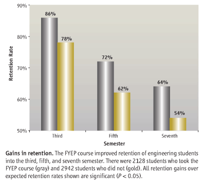
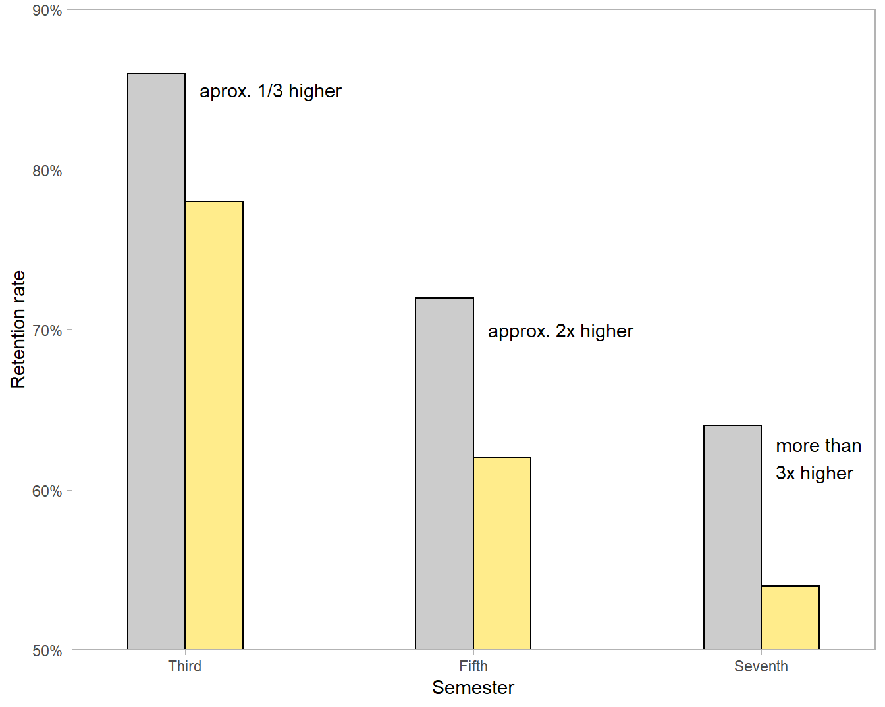
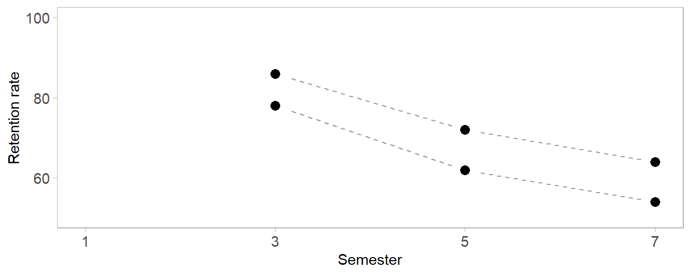
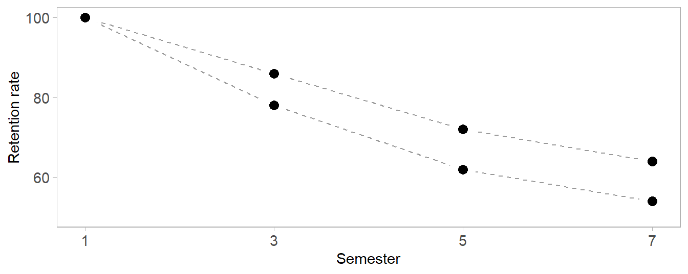

R code
# packages
library("data.table")
library("ggplot2")Redesigning a grouped-bar chart and including missing data to reveal an important change to the story in the data.
Richard Layton
2015-07-20
I ported this post from my graphdoctor.com blog, edited it slightly, and added R code chunks for reproducibility.
In August 2007, Science published a bar graph that illustrates how design decisions made to attract a reader’s eye can also distort and conceal meaning. While the distortions were surely unintentional, the integrity of the story in the data was compromised nevertheless.
A colleague and I noted the perceptual issues of this bar graph when the article first appeared. With the permission of the first author, Norm Fortenberry, we sent a shorter version of this critique to the Science editor. They responded by posting a scatterplot much like the one shown here in an online addendum.
Throughout the post, you can click on the “R code” pointer to see the script used to create the graphs. This first code chunk loads the packages used.
The graph shows a time series of retention rates for two cohorts of undergraduate students (Fortenberry et al. 2007). One cohort had matriculated in engineering in a First Year Engineering Program (FYEP) and one cohort had not (non-FYEP). The main story is clear, that retention rates drop over time for both cohorts but that FYEP students are always retained at a higher rate than non-FYEP students. Yet the graph design distorts one comparison and omits another.

The visual design distorts the relationship between the two cohorts. While the printed numbers show that the difference between the two cohorts remains fairly constant (about 10%) over time, the visual message conveyed by the bar heights is that the difference between cohorts increases over time. The FYEP bar is at first approximately 1/3 higher than the adjacent bar, then nearly twice as high, then more than three times as high.
# read data from blog data directory
dt <- fread("retention-2007.csv")
# grouped bar graph
# use y = pct - 50 to force ggplot to produce a non-zero baseline
# then relabel the y-axis scale, i.e., 0 is labeled 50%
ggplot(dt, aes(x = term, y = pct-50, color = status, fill = status)) +
geom_bar(stat = "identity",
position = position_dodge(),
width = 0.8,
color = "black") +
scale_x_continuous(breaks = c(3, 5, 7),
labels = c("Third", "Fifth", "Seventh"),
expand = c(0.05, 0.15)) +
scale_y_continuous(limits = c(0, 40),
breaks = seq(0, 40, 10),
labels = c("50%", "60%", "70%", "80%", "90%"),
expand = c(0, 0)) +
scale_fill_manual(values = c("gray80", "lightgoldenrod1")) +
labs(x = "Semester",
y = "Retention rate") +
annotate("text",
x = 0.1 + c(3, 5, 7),
y = -50 + c(85, 70, 62),
label = c("aprox. 1/3 higher",
"approx. 2x higher",
"more than\n3x higher"),
hjust = 0) +
theme_light() +
theme(legend.position = "none",
panel.grid.major = element_blank(),
panel.grid.minor = element_blank())
The problem is the non-zero baseline—a well-known concern when using bar charts. Naomi Robbins reminds us that not all graphs require a zero baseline, contrary to Darrell Huff’s advice in his 1954 classic How to Lie with Statistics, but a bar graph without a zero baseline inevitably (and sometimes purposefully) exaggerates differences.
The caption reinforces the miscommunication by stating that the FYEP course “improved retention…into the third, fifth, and seventh semester,” subtly implying a difference that increases over time rather than remaining constant.
Because the structure of a data set is an important factor in designing a chart, I classify the variables in Table 1.
| variable | structure |
|---|---|
| term | categorical, ordinal, discrete time, 3 levels |
| status | categorical, nominal, 2 levels |
| percent retention | quantitative |
The data are available in the blog post directory.
A prominent element of this grouped-bar design is time on the horizontal axis, implying that time is the independent variable. Conventionally, time-dependent variables are best graphed as scatterplots with connected dots to display their evolution over time (Doumont 2009, 141). The difference between the two cohorts is clearly seen to be nearly constant.
# redesign the bar chart as a scatterplot
f <- ggplot(data = dt, mapping = aes(x = term, y = pct, fill = status)) +
# helper line to almost connect the dots
geom_line(linetype = 2, color = "gray60") +
# white point overprints the line
geom_point(size = 9, shape = 16, color = "white") +
# data marker overprints the white space
geom_point(size = 3, shape = 16, color = "black") +
# scales
scale_x_continuous(limits = c(1, 7), breaks = c(1, 3, 5, 7)) +
scale_y_continuous(limits = c(50, 100), breaks = seq(0, 100, 20)) +
labs(x = "Semester", y = "Retention rate") +
# edit theme
theme_light() +
theme(legend.position = "none",
panel.grid = element_blank(),
axis.text = element_text(size = 11),
axis.title = element_text(size = 11))
# print
f
However, a significant story in these data is (inadvertently) overlooked by omitting semester one, the point in time at which both cohorts would be considered 100% retained—the “missing relation” in the title. Only by including the starting time point can we see the importance of the early semesters.
The overlooked story is the early impact of the FYEP course with its higher rate of retention from semester 1 to 3. After semester 3, the factors affecting attrition seem to act on both groups equally—the lines are effectively parallel after semester 3. Thus the important impact of FYEP is in the first two terms. The visual story is clear when we include the missing term.

One final design point: unlike a bar graph, a scatter plot does not require a zero baseline. However, I can include the full 0–100% range to display that the lowest rate of retention is still above 50%, an important result (as discussed in the prose of the article) compared to the retention rates of non-engineering disciplines. e.g., 42% in biological sciences and 30% in math and physical sciences.
My critique to this point has focused on clarity and a minimalist design aesthetic, hallmarks of the “rhetoric of science” (Kostelnick 2008). However, recognizing that these downward sloping curves represent decisions made by real students invites us to ask about the human stories in these data. Are the students in either group better off? Are the students who leave engineering graduating in other disciplines? Is retention even a concern to students? In light of such questions, the graphs seem inadequate, as if we’ve missed an opportunity to tell important human stories.
In the text of the article, the authors do address such concerns. Retention rates reflect student decisions that are influenced almost exclusively by human factors: “student’s background, college administrative issues, academic and social integration, attitude and motivation, and fit within an institution.” Thus the retention data are a surrogate measure of some combination of these factors.
The original graph displays only six paired values (rate and semester). And though my redesigned graph corrects the distortions of the original, it still displays only eight paired values. Neither graph has the visual impact it might have had if designed to convey the important story the authors tell in their prose.
Readers may view, browse, and/or download material for temporary copying purposes only, provided these uses are for noncommercial personal purposes. Except as provided by law, this material may not be further reproduced, distributed, transmitted, modified, adapted, performed, displayed, published, or sold in whole or in part, without prior written permission from the publisher.